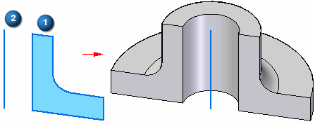

Revolve command
Use the Revolve command  to add or remove material from a part by revolving sketch elements (1) around a user-defined axis of rotation (2).
to add or remove material from a part by revolving sketch elements (1) around a user-defined axis of rotation (2).

Note:
You can also place the axis on a handle in a space point.

You define whether material is added or removed by cursor position while constructing the feature, or by setting options on the command bar or by using shortcut keys.
A closed sketch is required when constructing the base feature.
Note:
You can also construct revolved features using the Select command on the Home tab.
How do I
Construct a revolved extrusion: base featureConstruct a revolved extrusion or cutout: subsequent features
Edit the radius of a face
Move a group of faces radially along a direction
Learn more
Constructing revolved synchronous featuresConstructing revolved features using the Select tool
Look up more details
Revolve command barRevolved Protrusion command bar
Radiate command
Radiate command bar